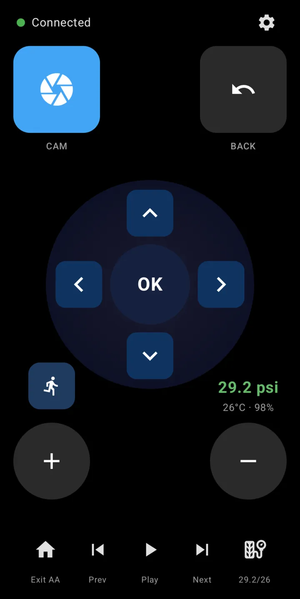
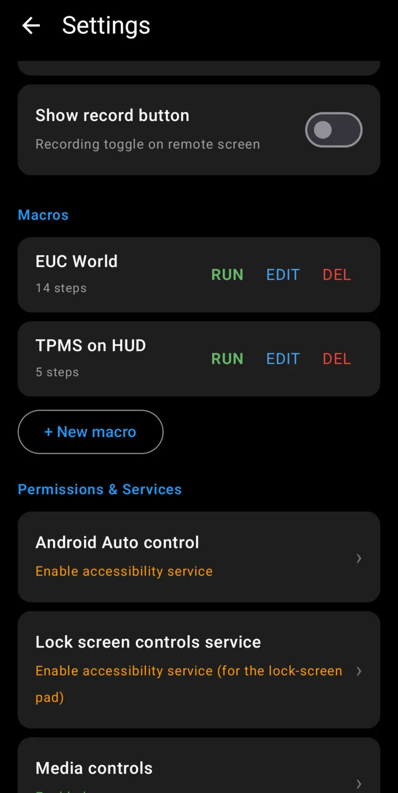
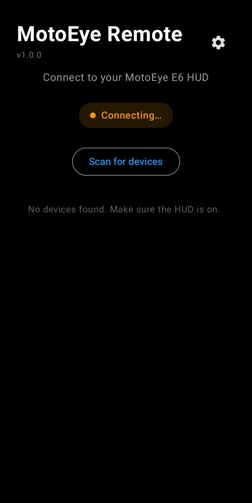
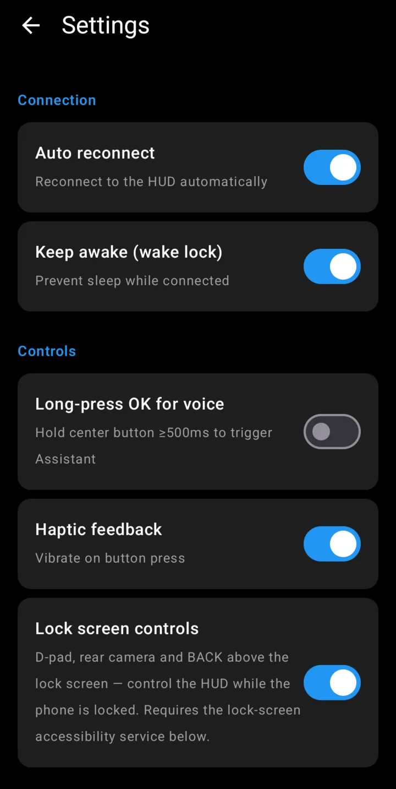
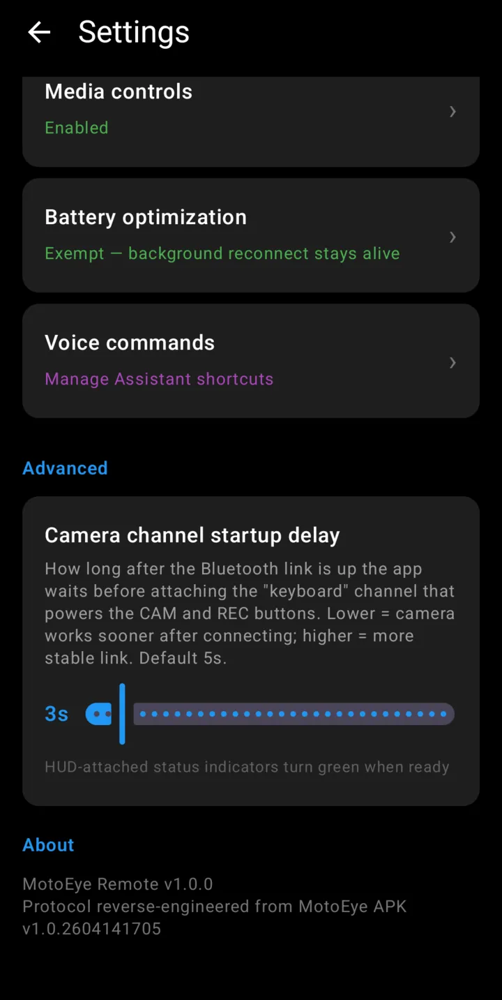

Full-screen D-pad
Up, down, left, right and OK sized for a gloved thumb, plus BACK and volume hold-keys. Haptic feedback confirms every press.
For the MotoEye E6 motorcycle HUD
MotoEye Remote turns your Android phone into a full-screen remote for the MotoEye E6 head-up display. Big D-pad and OK, BACK, rear camera, DVR recording, volume and media keys, live tyre pressure, and one-tap macros — on a phone mounted on the bars instead of a tiny button pod on your wrist.
Free, no account, no ads, no data leaves your phone. An independent project — not made by or affiliated with MotoEye or Vidoar.


Up, down, left, right and OK sized for a gloved thumb, plus BACK and volume hold-keys. Haptic feedback confirms every press.
Tap CAM to flip the HUD to the rear-view camera. An optional REC button starts and stops background dash-cam recording — the same signals the physical remote sends.
Reads the MotoEye TPMS sensors directly over Bluetooth and shows pressure, temperature and sensor battery on the remote — even on HUD firmware that hides its own TPMS screen.
Record a key sequence once — open EUC World on the HUD, jump to the TPMS page — and replay it with one tap. Each step has its own hold time and delay.
Optional D-pad, camera and BACK buttons above the lock screen, so you can drive the HUD without unlocking the phone at the lights.
Play, previous and next for whatever is playing, plus a one-tap “Exit Android Auto” and Google Assistant shortcuts for hands-free commands.
Real screens from a Galaxy S25 connected to a MotoEye E6. Dark, high-contrast and readable in sunlight.



The phone joins the HUD as a second remote, alongside the one that came in the box. Nothing on the HUD is modified.
Navigation keys travel over the same Bluetooth LE service the official remote uses, so the HUD treats the phone as just another remote.
Camera and recording only respond to the physical remote's keyboard signals, so the app also presents the phone to the HUD as a Bluetooth keyboard — a short press flips the camera, a long press toggles recording.
Switch the HUD off at a stop and back on, and the remote reconnects without you touching the phone. A notification keeps camera and BACK one swipe away.
The remote and TPMS Bluetooth protocols are written up in full in the project README.
It is built and tested on the MotoEye E6. Other Vidoar-based MotoEye HUDs use the same remote protocol and may work, but are untested.
No. The phone pairs as a second remote, so you can use either — keep the original as a backup.
No. MotoEye Remote talks to the HUD directly over Bluetooth. You can keep the official app installed for firmware updates and settings.
Only for two optional features: showing the remote pad on the lock screen and the “Exit Android Auto” button. The services cannot read what's on your screen. The setup guide explains every permission.
Any Android phone running Android 8.0 or later with Bluetooth LE.
Nothing. No ads, no in-app purchases, no account.
Signed APKs are published on GitHub Releases with every version. A Google Play listing is on the way.